2018
Les débuts
Création de Qualimatic Production. Les premiers films viennent de mes voyages, les premières émotions captées aussi.
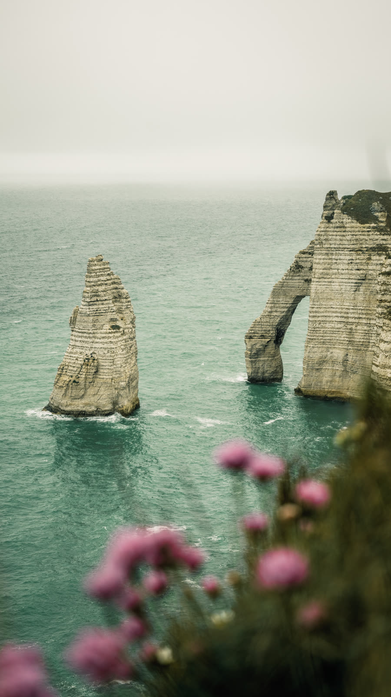
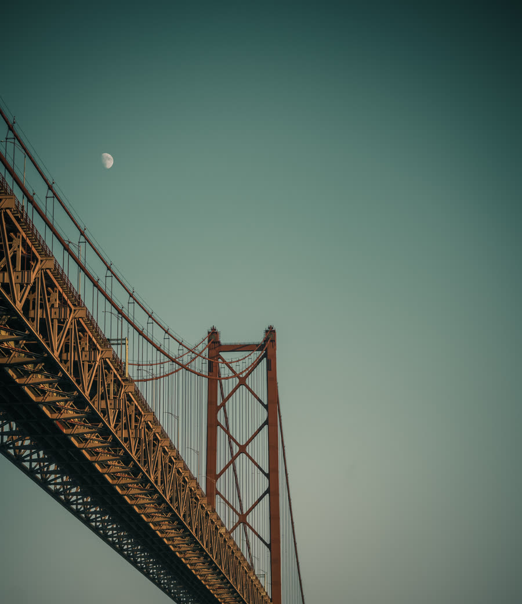
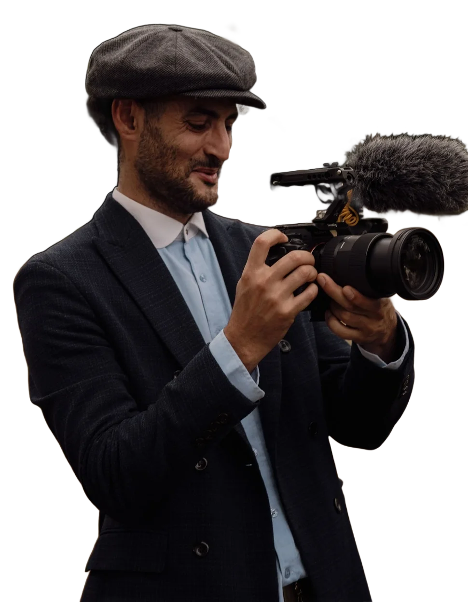

Ma démarche
Je m’occupe d’en faire un film.
Moi c’est Charly. Je viens de Besançon, en Franche-Comté, et je vis aujourd’hui en Sologne, à Romorantin. La Loire est devenue ma maison. La Franche-Comté reste ma région, celle à laquelle j’appartiens.
J’ai commencé à filmer en voyage, simplement pour garder une trace. En 2018, c’est devenu Qualimatic Production. Les mariages sont arrivés en 2022, et j’avais peur d’y perdre ma créativité. C’est l’inverse qui s’est passé.
Je travaille seul, du premier appel au film livré. C’est un choix. Le jour J, je me fais discret et je reste là quand ça compte. Pour la séance couple, j’apporte ma lumière et je vous guide, selon vos envies.
Vous vivez votre journée, moi je la capte telle qu’elle est.
Mon parcours
De la première caméra aux châteaux d’aujourd’hui.
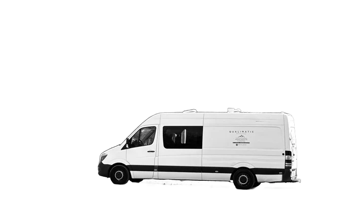
2018
Création de Qualimatic Production. Les premiers films viennent de mes voyages, les premières émotions captées aussi.


2020
Un style s’affirme, des images de cinéma, une lumière travaillée, des montages intemporels. L’étalonnage devient une signature.
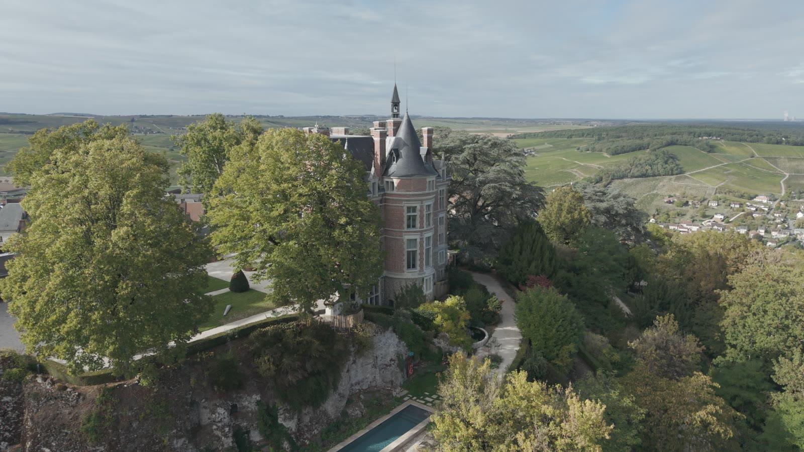
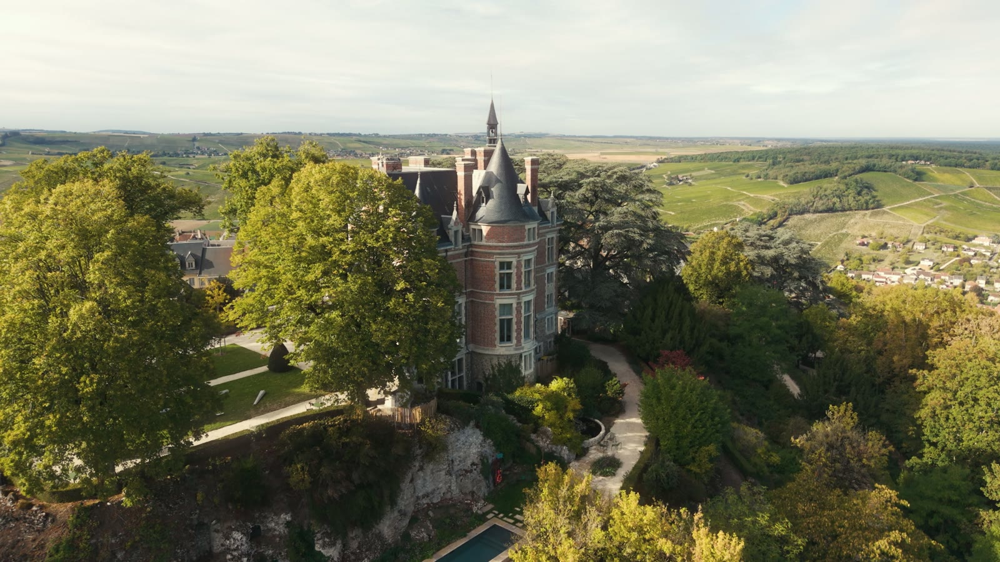
2022
Les débuts dans le monde du mariage. J’avais peur d’y laisser ma créativité ; c’est tout le contraire qui s’est passé.
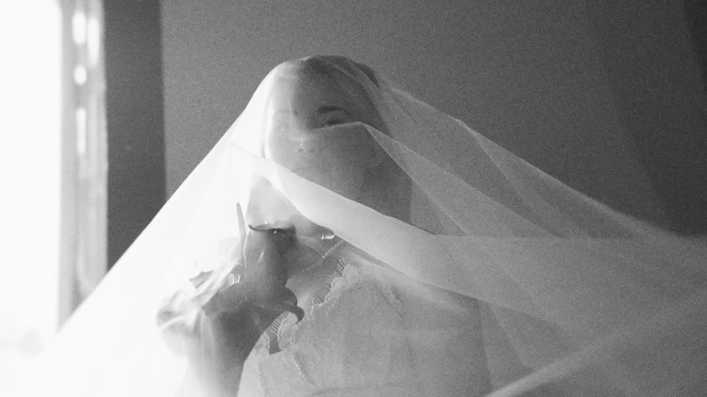
2024
Premiers châteaux et lieux d’exception. Le bouche-à-oreille s’installe.
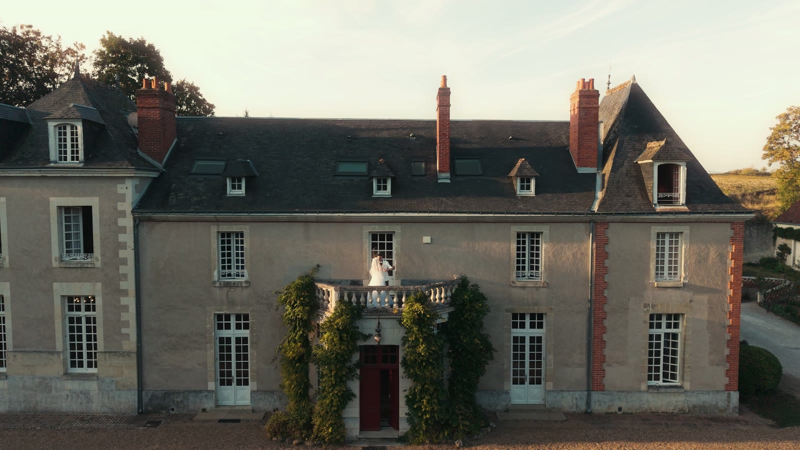
2026
Une dizaine de mariages par an, plus de trente depuis 2023, des films pour des chefs et pour des maisons. Toujours seul derrière l’objectif, toujours la même exigence.
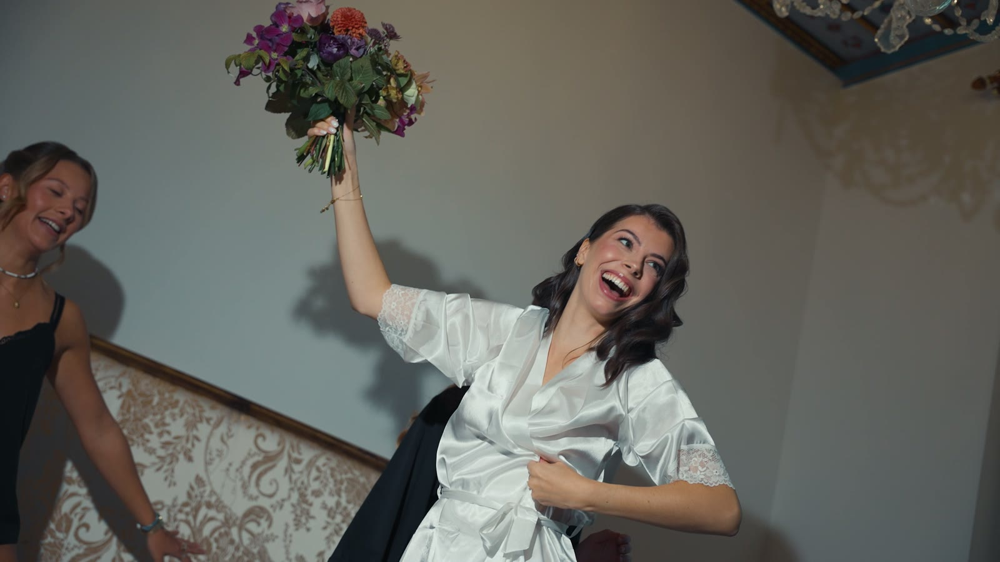
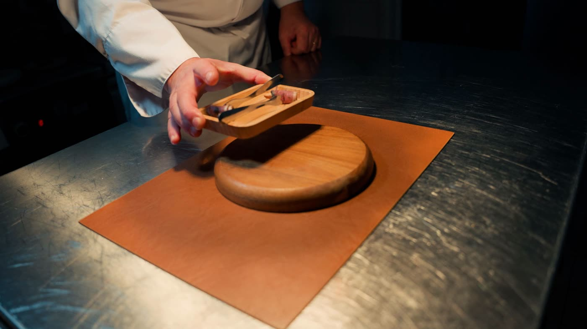

2027
Le prochain film, c’est peut-être le vôtre.
Réserver un appelPour savoir si je suis fait pour travailler avec vous
Je ne suis pas un vidéaste qui multiplie les mariages le même week-end.
Je suis un réalisateur qui choisit ses projets avec soin.
Je ne suis pas un prestataire qui suit les tendances TikTok.
Je suis un auteur qui défend une vision cinématographique.
Je ne suis pas un opérateur qui attend qu’on lui dise quoi filmer.
Je suis un observateur qui devine les moments avant qu’ils n’arrivent.
Je ne suis pas un technicien qui livre des rushs bruts.
Je suis un artisan qui livre des films aboutis et durables.
Je ne suis pas quelqu’un qui se fait remarquer le jour J.
Je suis un témoin discret qui s’efface pour laisser place à l’émotion.
Mes principes
Ils guident chaque film, quel que soit l’univers.
Je suis présent sans m’imposer. Pendant la journée, vous m’oublierez vite. Plus tard, vous vous verrez, sincères.
J’apporte ma lumière quand la journée en manque, et je la travaille pour qu’elle reste douce et fidèle à vos couleurs.
La journée, je la filme comme elle vient. Pour la séance couple, je vous guide dans des poses, selon vos envies, sans jamais vous transformer.
Vos films ne suivent pas les modes. Ils traversent le temps comme vos souvenirs.
Hors champ
En dehors des tournages, j’aime partir à l’aventure dans mon van aménagé, avec Juliette et nos deux chats, Ulysse et Achille. C’est ce goût de l’instant et des chemins de traverse que je glisse dans chaque film.
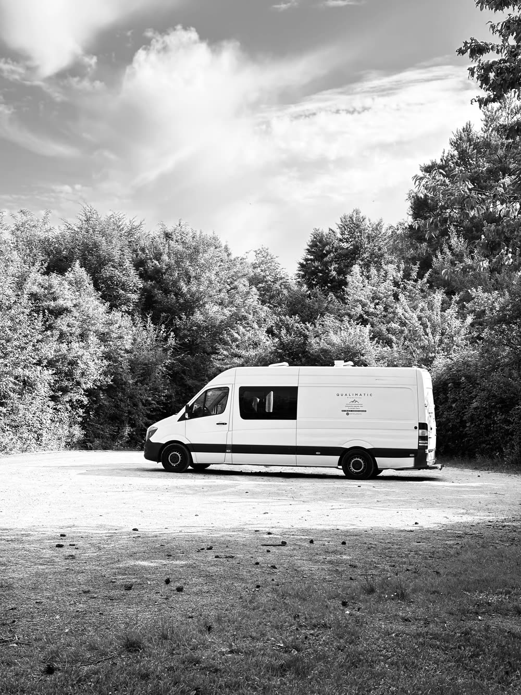
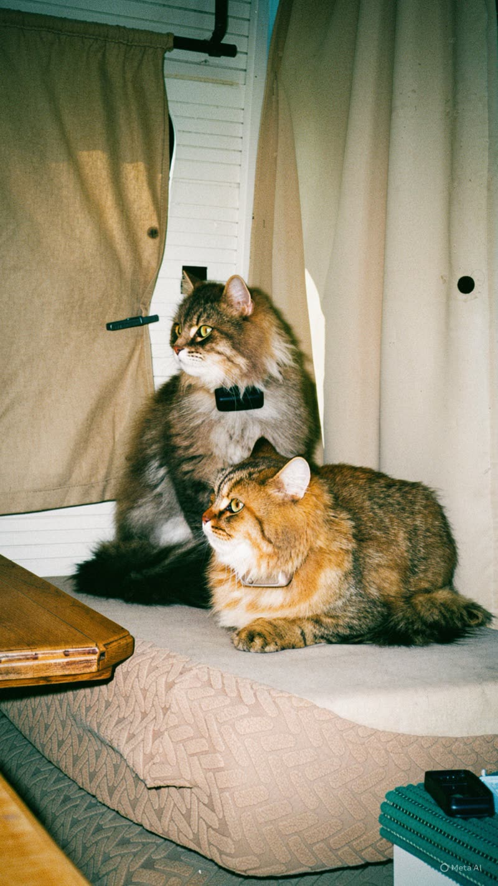
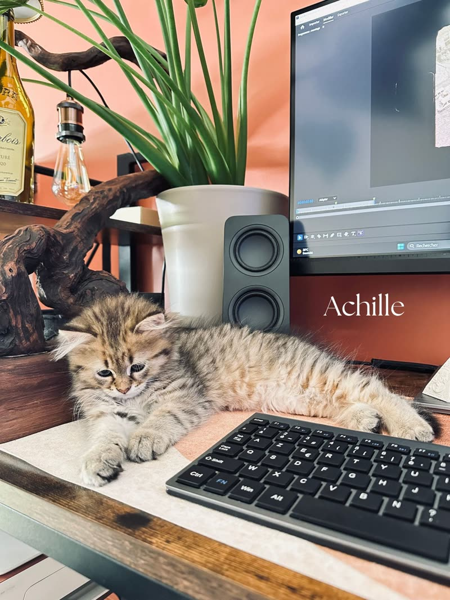
Faisons connaissance
Vingt minutes pour parler de votre projet, sans engagement ni devis automatique. Dites-moi comment vous joindre.
Ou directement 07 71 06 32 18 qualimatic.production@gmail.com